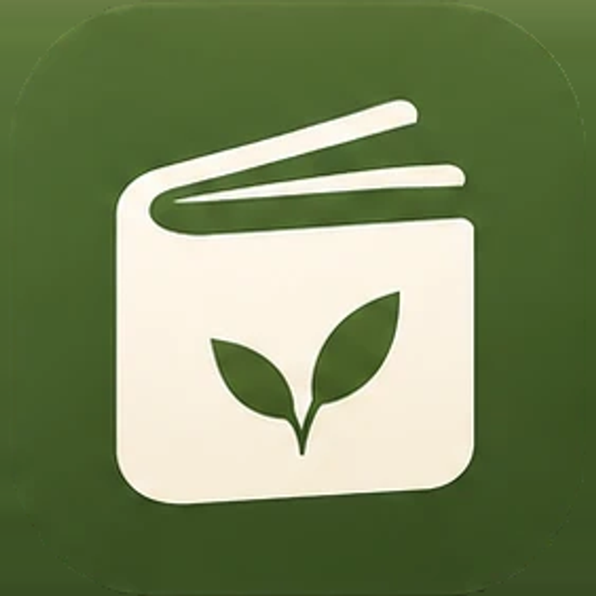
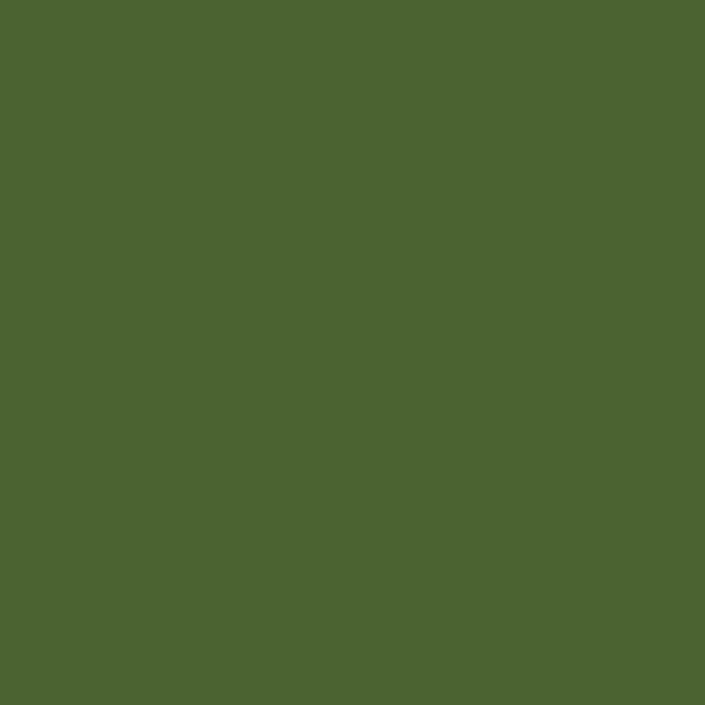
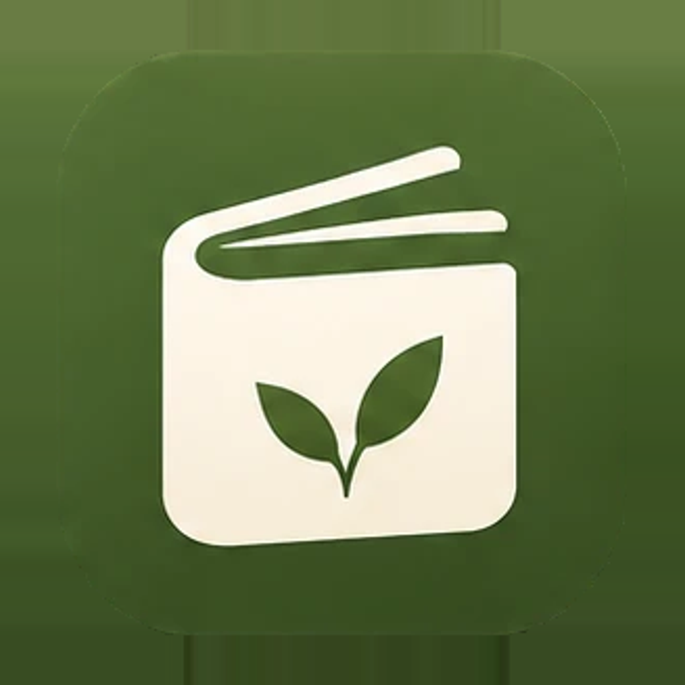
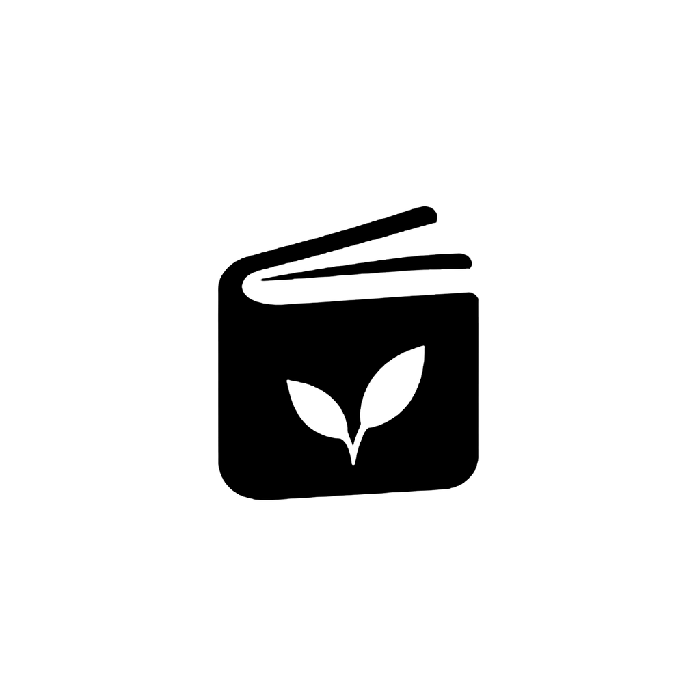
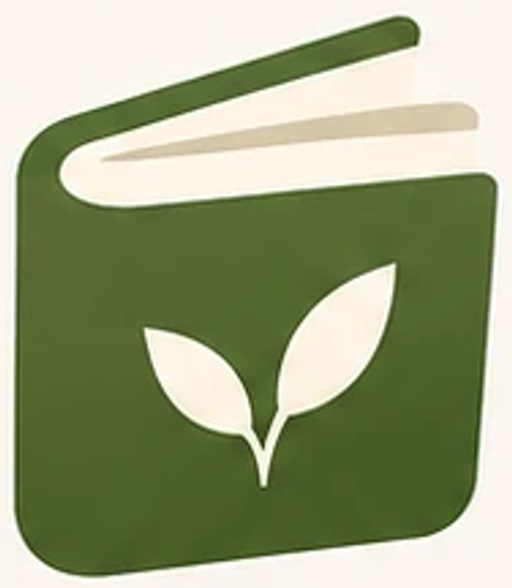

Cropped from the approved concept board. No shape, curve, colour or proportion was redrawn — see design/brand/README.md.

icon.png, unmaskedThe only pixels that differ from the source are outside the tile's rounded corners, where iOS and Android require an opaque square. Each row is extended with its own edge colour, so the tile's vertical shading carries through instead of being flattened.
The fanned pages hold to about 60 px. Below that the sprout merges into the card and the icon reads as a green tile with a light block — a limit of the source resolution, not of the design.



The wordmark is the board's own artwork, not re-set in a typeface. The reversed variant keeps the board's dark ground (about #37322A), which reads as a slightly lighter chip against the app canvas #141413; keying it to transparency ate the antialiasing at this resolution.

The icon tile is 277 × 282 in the 1448 × 1086 source and is upscaled 3.63× to the 1024² that both platforms require. Lanczos-3 keeps it as clean as the source allows, but the result is soft at full size and the board's compression artefacts are magnified with it. No sharpening is applied, because unsharp masking at this ratio pulls halos out of those artefacts.